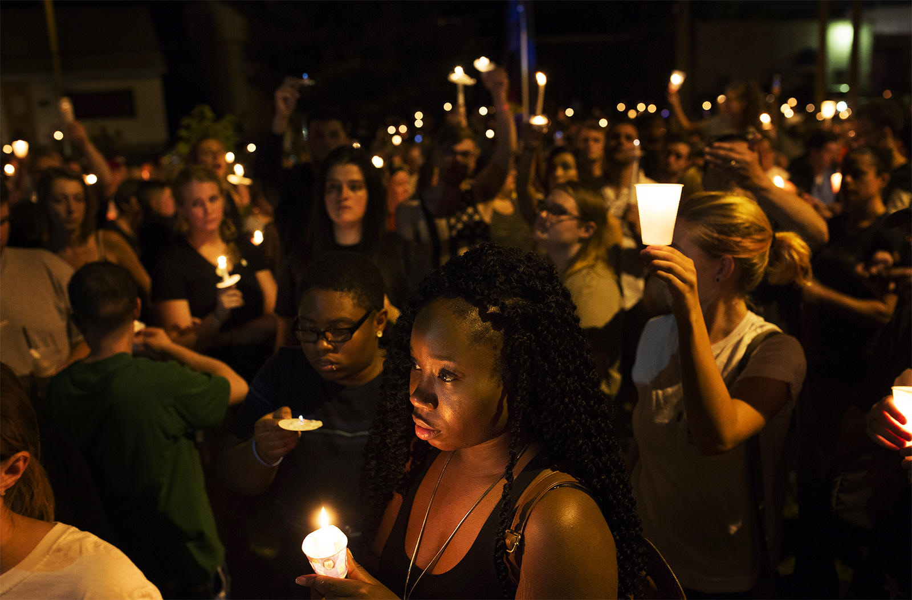
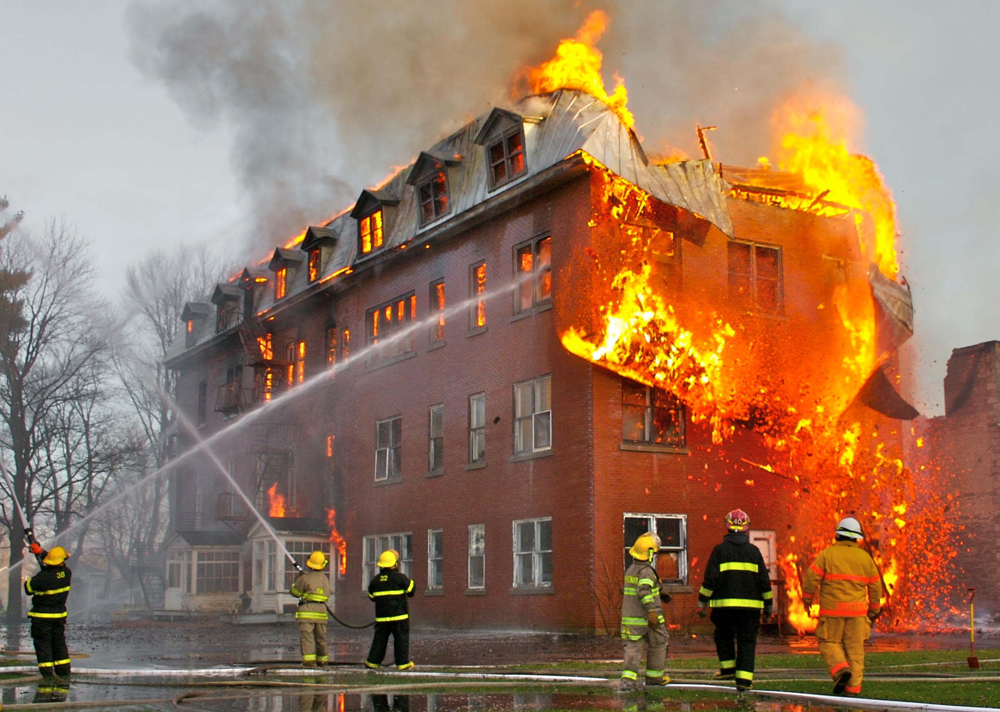

* Nearly three million index crimes occur on or around American school campuses each year. This breaks down to 16,000 crimes per school day.
* There is 1 crime every 6 seconds when schools are in session.
* As violence increases, pressure for safe and orderly schools increases. Students and parents need to be aware of what to do in unsafe situations.
What protects children and people at school?New York State Safe Schools Against Violence in Education (SAVE), promotes safe learning environments where students and teachers work collaboratively in pursuit of academic excellence and social and emotional growth. On July 24, 2000 Governor Pataki signed into law the Safe Schools Against Violence in Education Act. This legislation culminates NYSUT's efforts, to improve school safety in response to the rise of violence in our schools these past years.
A school shooting is an attack at an educational institution, such as a primary school, secondary school, or university, involving the use of firearms.
Incidents that involve four or more deaths are also categorized as mass shootings.
OccurencesSo far in 2019 there have been 22 shootings at US schools in which someone was hurt or killed.
 They have occurred across the country, from Georgia to California, at elementary, middle and high schools and on college and university campuses.
Response* When you hear gunfire, the first response should be to escape; be familiar with quick exit routes of your surroundings.
* Use the exits if you are sure that your path will not take you in the gunman’s direction.
* If escape is not an option, you should hide; remove yourself from the line of sight and gunfire is better than nothing.
* After removing yourself from the line of sight and gunfire is better than nothing.
* After hiding, don’t stop to grab belongings, not even your cellphone but if you do have one, call 911, identify yourself and explain briefly what is happening and where. Turn off lights. Do not talk with others in the room if the gunman is nearby. Stay as quiet as possible and stay low when hiding.
* The last thing you should do is fight; throw or use whatever you have at hand as a weapon against the gunman, or if strong
enough wrestle/jump the shooter when he/she is reloading the gun. It’s not ideal, but it has helped
Fires occuring at a school.
 OccurencesAround 2,700 school fires are started deliberately every year - the perpetrators are often past or present pupils.
ResponseThe firedrills happening at your school; happen yearly so that in a situation like this, hopefully everyone can escape safely.
If near a fire safety device like a fire blanket or fire extinguisher, use to help yourself and others near.
* A lockdown is a precautionary measure in response to a threat directly to the school or in the surrounding community.
* No one is allowed to enter or exit the building.
Types of Lockdowns* A soft lockdown- all the classroom doors and exterior building doors are locked; instruction/business can still take place
* A hard lockdown- an immediate threat on campus; it requires the school to go into an internal emergency procedure. Students, teachers and staff cannot move around within the school, and are required to remain within a locked classroom.
School Firedrills* A fire drill is a method of practicing how a building would be evacuated in the event of a fire or other emergencies.
* In NY, such drills shall be held at least twelve times in each school year, eight of which required drills shall be held between September first and December thirty-first of each such year.